Цель работы
Разместить на github pages заготовку персонального сайта.
Задачи
- Скачать необходимое ПО
- Скачать шаблон темы сайта
- Разместить его на github
- Разместить параметр для URL сайта
- Разместить заготовку сайта на github pages
Выполнение Лабораторной Работы
- Скачиваю с github релиз для своей системы, рис.1 заранее проверил архитектуру своей системы командой sudo –print-architecture
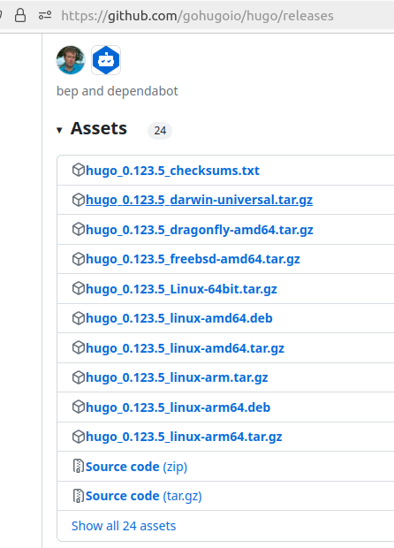Рис.1
- Распаковываю файлы, рис.2
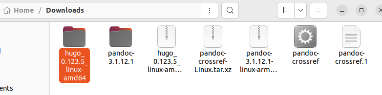Рис.2
- Создаем каталог bin в основной директории, переносим туда файл ‘hugo’, рис.3
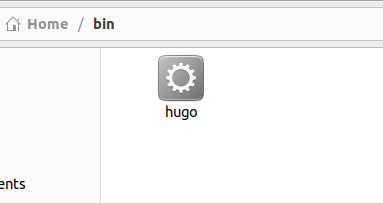Рис.3
- Захожу на репозиторий макета и создаю на его основе свой новый репозиторий, рис.4
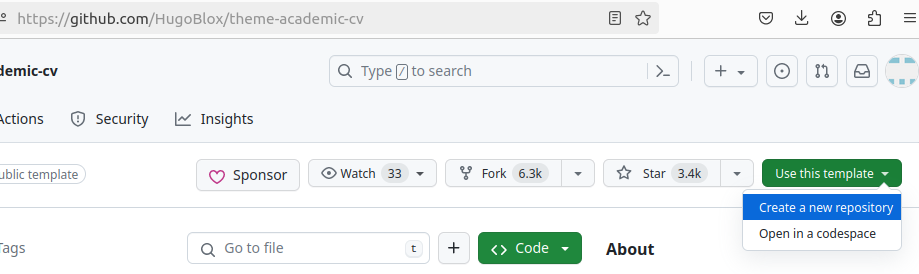Рис.4
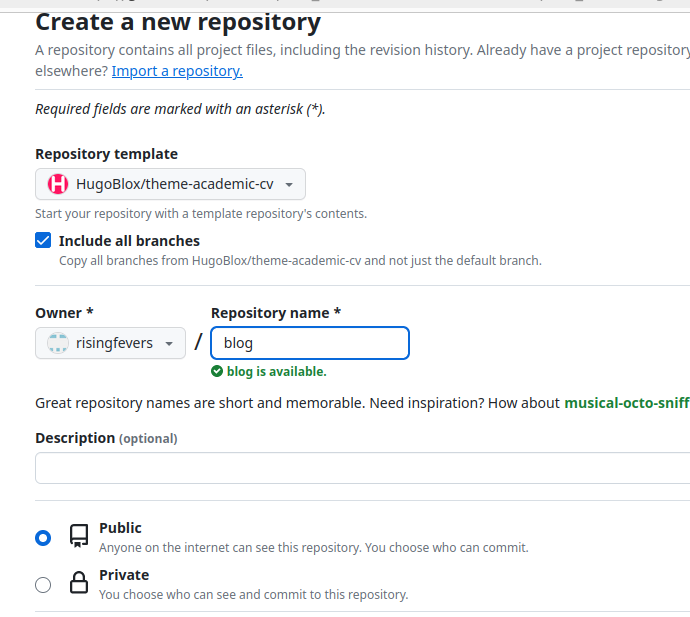Рис.5, Создание репозитория по шаблону
- Перехожу в ~/work и копирую новый репозиторий туда с помощью git clone:
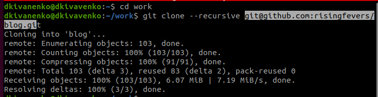Рис.6. Клонируем репозиторий
- Скачиваю go, он нужен для работы, рис.7
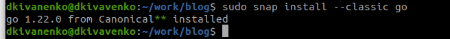Рис.7
- Пишу hugo чтобы начать создание сайта, рис.8
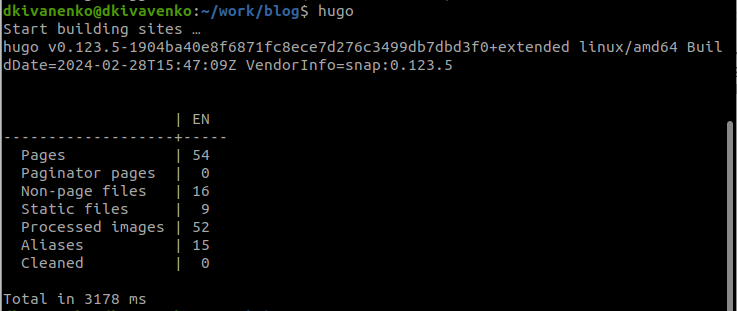Рис.8. Создание сайта
- Пишу mc и удаляю public файл:
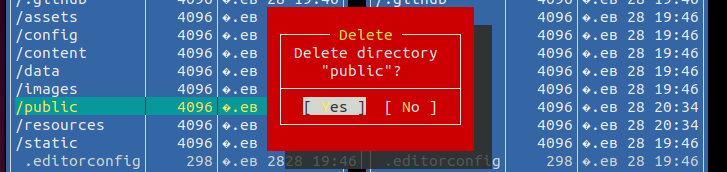Рис.9
- Запускаю сайт с помощью hugo server, рис.10. Там же беру ссылку на сайт, рис.11
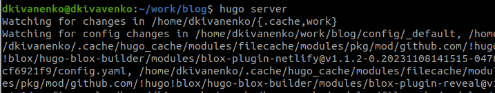Рис.10
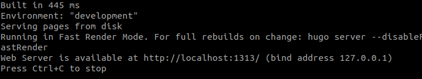Рис.11
- Перехожу по ссылке, вот сайт:
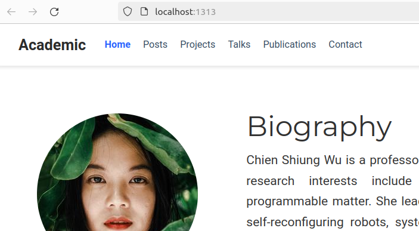Рис.12
- Далее создаю новый репозиторий, с именем Dima-Ivanenko.guthub.io, рис.13
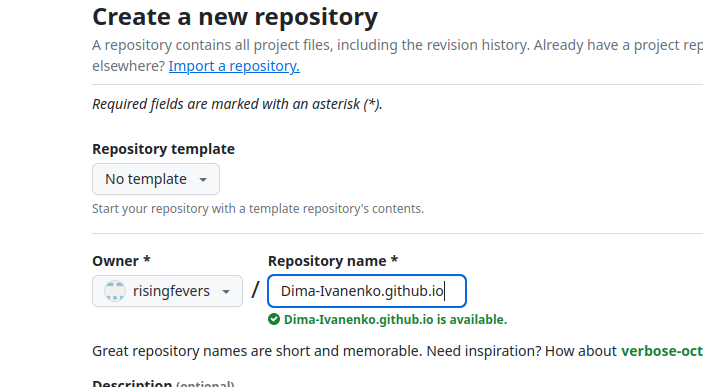Рис.13. Создание нового реопозитория
- Перехожу в ~/work, туда клонирую новый репозиторий:
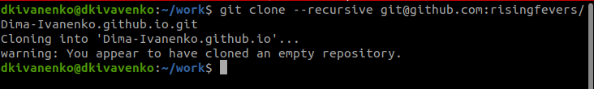Рис.14
- Переходим на ветку main, рис.15
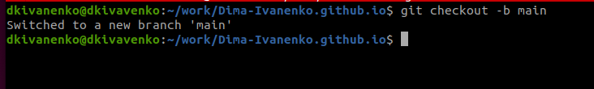Рис.15
- Перехожу в файл репозитория. Создаю файл README.md и отправляю его на сервер, рис.16
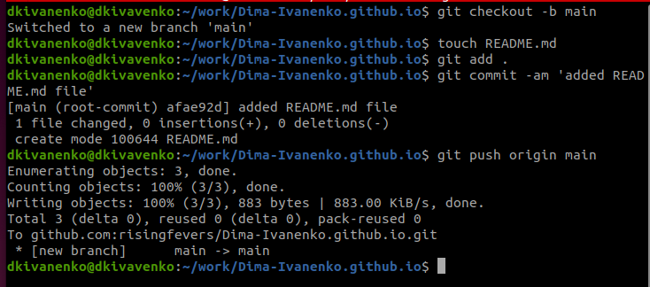Рис.16
- Выполняем программу, чтобы наша директория подключилась к репозиторию.
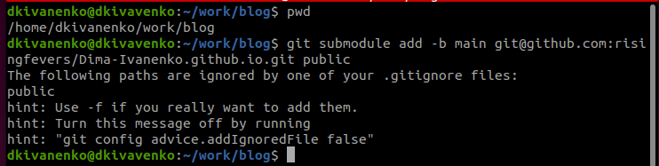Рис.17
- Далее комментируем #public в редакторе, рис.18
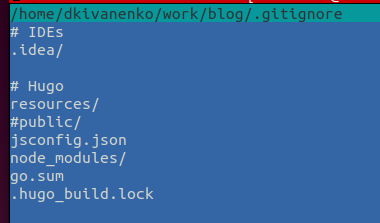Рис.18
- Повторяем неудавшуюся команду:
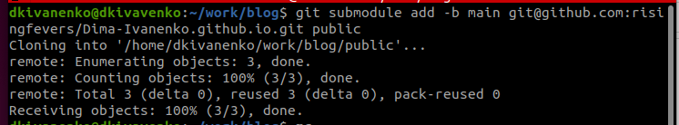Рис.19
- Пишем hugo
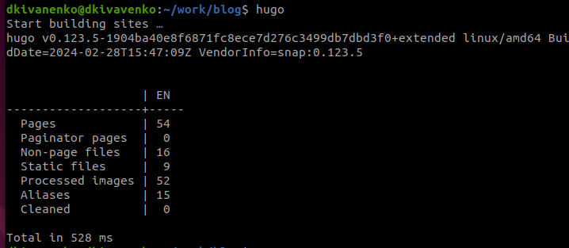Рис.20
- Далее проверяем в директории public, получилось ли подключить, рис.21
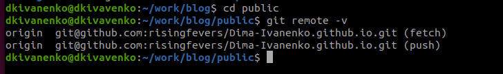Рис.21
- Отправляем на сервер github
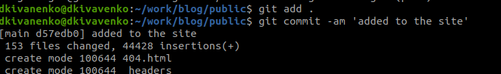Рис.22
- Проверяю, получилось ли на сайте:
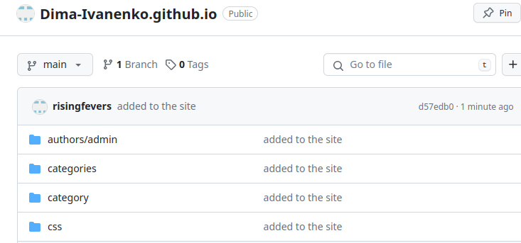Рис.23
Выводы
В процессе выполнения первого этапа проекта, мы научились размещать на github pages заготовки персонального сайта.